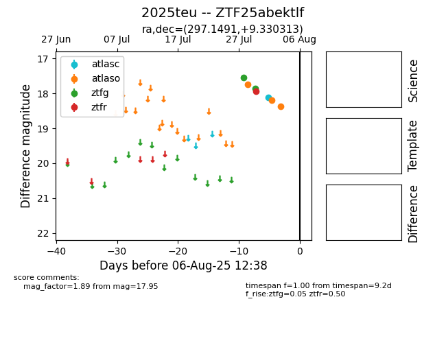

Target 2025teu at 2025-08-06 17:27, see:
FINK: fink-portal.org/2025teu
Lasair: lasair-ztf.lsst.ac.uk/objects/2025teu
ALeRCE: alerce.online/object/2025teu
TNS: wis-tns.org/object/2025teu
YSE: ziggy.ucolick.org/yse/transient_detail/2025teu
alt names
ZTF25abektlf (ztf,fink)
2025teu (tns,yse)
coordinates:
equatorial (ra, dec) = (297.1491,+9.33031)
galactic (l, b) = (47.8830,-8.21202)
photometry
last atlasc=18.11, atlaso=nan, ztfg=17.86, ztfr=17.95
1 atlasc, 4 atlaso, 2 ztfg, 1 ztfr detections
